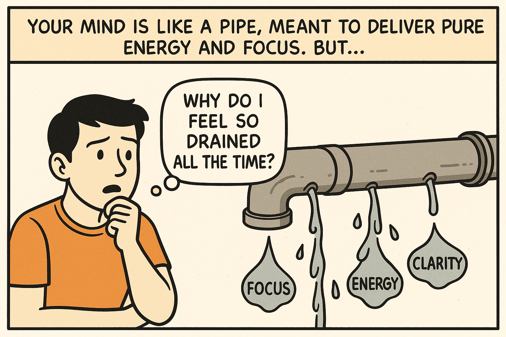
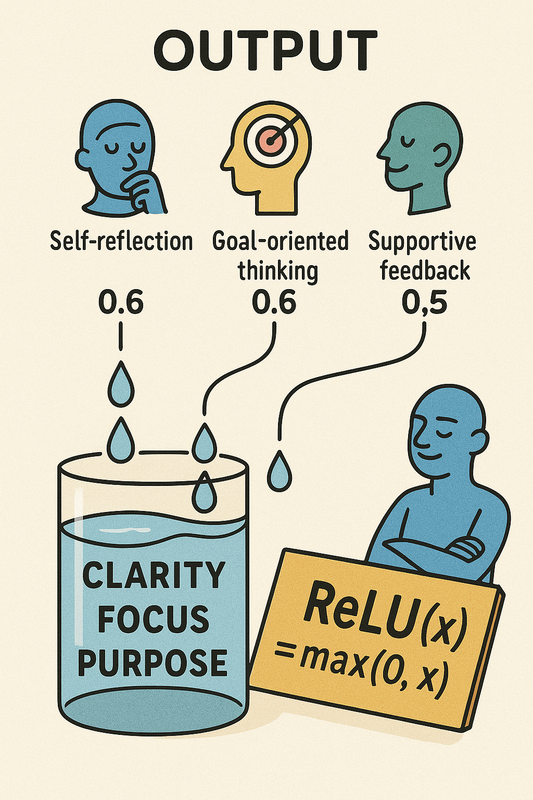

Why do I feel so mentally drained?

Your mind has energy — but distractions drain it.
Watch: Applying ReLU Filter
Your browser does not support the video tag.
Download Video
The Output

Clear mind. Clear values. Strong output.
Previous
Next